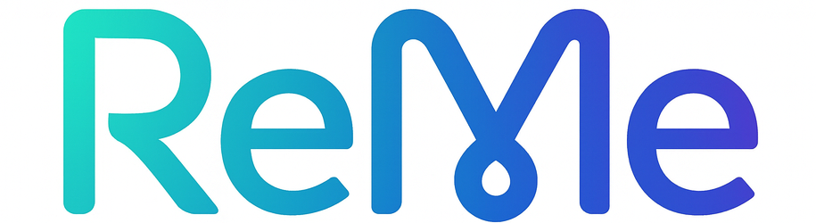

Welcome to ReMe
Memory Management Framework for Agents


ReMe (formerly MemoryScope): Memory Management Framework for Agents
Remember Me, Refine Me.
ReMe provides AI agents with a unified memory system—enabling the ability to extract, reuse, and share memories across users, tasks, and agents.
Personal Memory + Task Memory = Agent Memory
Personal memory helps "understand user preferences", while task memory helps agents "perform better".
📰 Latest Updates
- [2025-09] 🎉 ReMe v0.1.8 has been officially released, adding support for asynchronous operations. It has also been integrated into the memory service of agentscope-runtime.
- [2025-09] 🎉 ReMe v0.1 officially released, integrating task memory and personal memory. If you want to use the original memoryscope project, you can find it in MemoryScope.
- [2025-09] 🧪 We validated the effectiveness of task memory extraction and reuse in agents in appworld, bfcl(v3), and frozenlake environments. For more information, check appworld exp, bfcl exp, and frozenlake exp.
- [2025-08] 🚀 MCP protocol support is now available -> MCP Quick Start.
- [2025-06] 🚀 Multiple backend vector storage support (Elasticsearch & ChromaDB) -> Vector DB quick start.
- [2024-09] 🧠 MemoryScope v0.1 released, personalized and time-aware memory storage and usage.
✨ Architecture Design

ReMe integrates two complementary memory capabilities:
🧠 Task Memory/Experience
Procedural knowledge reused across agents
- Success Pattern Recognition: Identify effective strategies and understand their underlying principles
- Failure Analysis Learning: Learn from mistakes and avoid repeating the same issues
- Comparative Patterns: Different sampling trajectories provide more valuable memories through comparison
- Validation Patterns: Confirm the effectiveness of extracted memories through validation modules
Learn more about how to use task memory from task memory
👤 Personal Memory
Contextualized memory for specific users
- Individual Preferences: User habits, preferences, and interaction styles
- Contextual Adaptation: Intelligent memory management based on time and context
- Progressive Learning: Gradually build deep understanding through long-term interaction
- Time Awareness: Time sensitivity in both retrieval and integration
Learn more about how to use personal memory from personal memory
🛠️ Installation
Install from PyPI (Recommended)
pip install reme-ai
Install from Source
git clone https://github.com/modelscope/ReMe.git
cd ReMe
pip install .
Environment Configuration
Copy example.env to .env and modify the corresponding parameters:
# Required: LLM API Configuration
FLOW_LLM_API_KEY=sk-xxxx
FLOW_LLM_BASE_URL=https://xxxx/v1
# Required: Embedding Model Configuration
FLOW_EMBEDDING_API_KEY=sk-xxxx
FLOW_EMBEDDING_BASE_URL=https://xxxx/v1
🚀 Quick Start
HTTP Service Startup
reme \
backend=http \
http.port=8002 \
llm.default.model_name=qwen3-30b-a3b-thinking-2507 \
embedding_model.default.model_name=text-embedding-v4 \
vector_store.default.backend=local
MCP Server Support
reme \
backend=mcp \
mcp.transport=stdio \
llm.default.model_name=qwen3-30b-a3b-thinking-2507 \
embedding_model.default.model_name=text-embedding-v4 \
vector_store.default.backend=local
Core API Usage
Task Memory Management
import requests
# Experience Summarizer: Learn from execution trajectories
response = requests.post("http://localhost:8002/summary_task_memory", json={
"workspace_id": "task_workspace",
"trajectories": [
{"messages": [{"role": "user", "content": "Help me create a project plan"}], "score": 1.0}
]
})
# Retriever: Get relevant memories
response = requests.post("http://localhost:8002/retrieve_task_memory", json={
"workspace_id": "task_workspace",
"query": "How to efficiently manage project progress?",
"top_k": 1
})
curl version
# Experience Summarizer: Learn from execution trajectories
curl -X POST http://localhost:8002/summary_task_memory \
-H "Content-Type: application/json" \
-d '{
"workspace_id": "task_workspace",
"trajectories": [
{"messages": [{"role": "user", "content": "Help me create a project plan"}], "score": 1.0}
]
}'
# Retriever: Get relevant memories
curl -X POST http://localhost:8002/retrieve_task_memory \
-H "Content-Type: application/json" \
-d '{
"workspace_id": "task_workspace",
"query": "How to efficiently manage project progress?",
"top_k": 1
}'
Node.js version
// Experience Summarizer: Learn from execution trajectories
fetch("http://localhost:8002/summary_task_memory", {
method: "POST",
headers: {
"Content-Type": "application/json",
},
body: JSON.stringify({
workspace_id: "task_workspace",
trajectories: [
{messages: [{role: "user", content: "Help me create a project plan"}], score: 1.0}
]
})
})
.then(response => response.json())
.then(data => console.log(data));
// Retriever: Get relevant memories
fetch("http://localhost:8002/retrieve_task_memory", {
method: "POST",
headers: {
"Content-Type": "application/json",
},
body: JSON.stringify({
workspace_id: "task_workspace",
query: "How to efficiently manage project progress?",
top_k: 1
})
})
.then(response => response.json())
.then(data => console.log(data));
Personal Memory Management
# Memory Integration: Learn from user interactions
response = requests.post("http://localhost:8002/summary_personal_memory", json={
"workspace_id": "task_workspace",
"trajectories": [
{"messages":
[
{"role": "user", "content": "I like to drink coffee while working in the morning"},
{"role": "assistant",
"content": "I understand, you prefer to start your workday with coffee to stay energized"}
]
}
]
})
# Memory Retrieval: Get personal memory fragments
response = requests.post("http://localhost:8002/retrieve_personal_memory", json={
"workspace_id": "task_workspace",
"query": "What are the user's work habits?",
"top_k": 5
})
curl version
# Memory Integration: Learn from user interactions
curl -X POST http://localhost:8002/summary_personal_memory \
-H "Content-Type: application/json" \
-d '{
"workspace_id": "task_workspace",
"trajectories": [
{"messages": [
{"role": "user", "content": "I like to drink coffee while working in the morning"},
{"role": "assistant", "content": "I understand, you prefer to start your workday with coffee to stay energized"}
]}
]
}'
# Memory Retrieval: Get personal memory fragments
curl -X POST http://localhost:8002/retrieve_personal_memory \
-H "Content-Type: application/json" \
-d '{
"workspace_id": "task_workspace",
"query": "What are the user's work habits?",
"top_k": 5
}'
Node.js version
// Memory Integration: Learn from user interactions
fetch("http://localhost:8002/summary_personal_memory", {
method: "POST",
headers: {
"Content-Type": "application/json",
},
body: JSON.stringify({
workspace_id: "task_workspace",
trajectories: [
{messages: [
{role: "user", content: "I like to drink coffee while working in the morning"},
{role: "assistant", content: "I understand, you prefer to start your workday with coffee to stay energized"}
]}
]
})
})
.then(response => response.json())
.then(data => console.log(data));
// Memory Retrieval: Get personal memory fragments
fetch("http://localhost:8002/retrieve_personal_memory", {
method: "POST",
headers: {
"Content-Type": "application/json",
},
body: JSON.stringify({
workspace_id: "task_workspace",
query: "What are the user's work habits?",
top_k: 5
})
})
.then(response => response.json())
.then(data => console.log(data));
📦 Ready-to-Use Libraries
ReMe provides pre-built memory libraries that agents can immediately use with verified best practices:
Available Libraries
appworld.jsonl: Memory library for Appworld agent interactions, covering complex task planning and execution patternsbfcl_v3.jsonl: Working memory library for BFCL tool calls
Quick Usage
# Load pre-built memories
response = requests.post("http://localhost:8002/vector_store", json={
"workspace_id": "appworld",
"action": "load",
"path": "./docs/library/"
})
# Query relevant memories
response = requests.post("http://localhost:8002/retrieve_task_memory", json={
"workspace_id": "appworld",
"query": "How to navigate to settings and update user profile?",
"top_k": 1
})
🧪 Experiments
🌍 Appworld Experiment
We tested ReMe on Appworld using qwen3-8b:
| Method | pass@1 | pass@2 | pass@4 |
|---|---|---|---|
| without ReMe | 0.083 | 0.140 | 0.228 |
| with ReMe | 0.109 (+2.6%) | 0.175 (+3.5%) | 0.281 (+5.3%) |
Pass@K measures the probability that at least one of the K generated samples successfully completes the task (
score=1).
The current experiment uses an internal AppWorld environment, which may have slight differences.
You can find more details on reproducing the experiment in quickstart.md.
🧊 Frozenlake Experiment
| without ReMe | with ReMe |
|---|---|
We tested on 100 random frozenlake maps using qwen3-8b:
| Method | pass rate |
|---|---|
| without ReMe | 0.66 |
| with ReMe | 0.72 (+6.0%) |
You can find more details on reproducing the experiment in quickstart.md.
🔧 BFCL-V3 Experiment
We tested ReMe on BFCL-V3 multi-turn-base (randomly split 50train/150val) using qwen3-8b:
| Method | pass@1 | pass@2 | pass@4 |
|---|---|---|---|
| without ReMe | 0.2472 | 0.2733 | 0.2922 |
| with ReMe | 0.3061 (+5.89%) | 0.3500 (+7.67%) | 0.3888 (+9.66%) |
📚 Resources
- Quick Start: Get started quickly with practical examples
- Vector Storage Setup: Configure local/vector databases and usage
- MCP Guide: Create MCP services
- personal memory & task memory : Operators used in personal memory and task memory, You can modify the config to customize the pipelines.
- Example Collection: Real use cases and best practices
🤝 Contribution
We believe the best memory systems come from collective wisdom. Contributions welcome 👉Guide:
Code Contributions
- New operation and tool development
- Backend implementation and optimization
- API enhancements and new endpoints
Documentation Improvements
- Usage examples and tutorials
- Best practice guides
📄 Citation
@software{ReMe2025,
title = {ReMe: Memory Management Framework for Agents},
author = {Li Yu, Jiaji Deng, Zouying Cao},
url = {https://github.com/modelscope/ReMe},
year = {2025}
}
⚖️ License
This project is licensed under the Apache License 2.0 - see the LICENSE file for details.